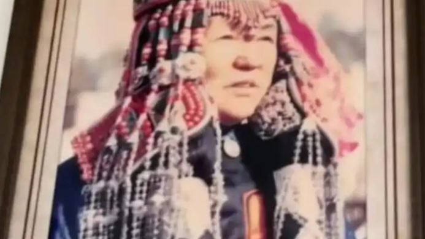

10月14日，成吉思汗第32代嫡孙女、"草原最后一位公主"斯琴杭茹在内蒙古离世，享年104岁。其孙女满都拉表示，奶奶生前身体一直很健康，大病和小病都没有得过，口齿清晰，记忆力好，离世时很安详。
一个跨越了整整一个世纪的普通人，安详地走完了自己的路。比起"公主"这个传奇头衔，更打动人的，是她作为一个百岁长者最后的平静。
告别，可以是温柔的。
所以比头衔更动人的，是一个普通人活到104岁的安然。
表层看，是显赫的身世引人关注；但更深一层，她是一段活着的历史——一个家族、一片草原、百年社会变迁的亲历者。人们记住的，不只是一个姓氏，而是一段可以被讲述、被触摸的过往。
在一个变化飞快的时代，这样"从过去走来"的长者，本身就是稀缺的。她的离世，让许多人想起自己生命里也曾有过、却已远去的那些长辈。
被记住，是因为她连接着我们的来处。
人们记住的，不只是一个姓氏，而是一段活着的历史。
从文化传承的视角看，游牧文化与家族口述史，往往靠这样一位位长者代代相传。他们脑中的名字、民歌、习俗与故事，是草原最生动的"活档案"。
当一代代"活档案"陆续离世，记录与保存的紧迫感也随之而来。留住这些故事，不只是留住一个家族的荣光，更是留住一个民族对自己来处的回看。
有些历史，只活在讲述里。
留住故事，就是留住一个民族对自己来处的回看。
回到孙女那句话：奶奶离世时很安详——这或许是一个百岁生命最好的结局。
斯琴杭茹的谢幕，让我们重新看见"长寿"与"安详"这两个词的分量。愿每一位走过漫长岁月的长者，都能被温柔相待；也愿那些即将随他们一起离开的故事，能被后来人认真记下。草原的风会记得，我们也该记得。